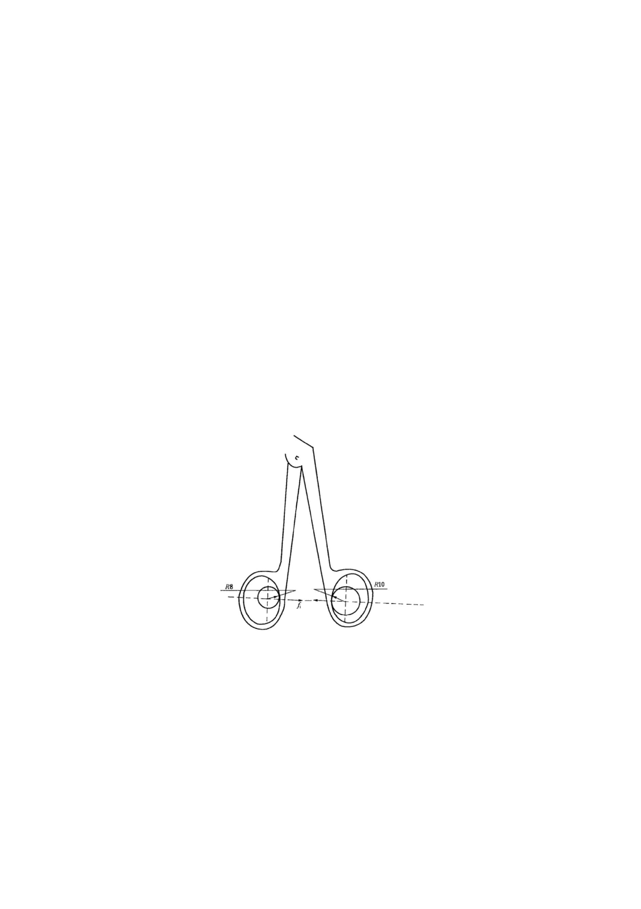

For handles with a structure different from that shown in Figure 1, the manufacturer shall
specify the application point of fi. The deviation in actual application point of fi shall be
within 1mm.
If the placement of device in the test affects the test result, the manufacturer shall specify
the placement of device.
5.4.4 Transmission coefficient of closing force
The closing force shall be tested under simulated application conditions, with the forceps
jaws slightly open to the degree specified by the manufacturer, indicated by the opening
height at 1/3 of the front ends of the jaws. Then, apply a force (fi) of 5N~20N to the handle,
with intervals not exceeding 3N. Record the closing force (fo) generated at 1/3 of the front
ends of the jaws, perpendicular to the bisector of the opening angle of the forceps jaws.
Then, fit the collected data using the least squares method to obtain the value of fo/fi,
which is the transmission coefficient of closing force.
The direction of fi is shown in Figure 1, and the application point of fi is determined by
simulating clinical application, it is the point where the handle is subject to force in a free
state.
Figure 2
For handles with a structure different from that shown in Figure 2, the manufacturer shall
specify the application point of fi. The deviation in actual application point of fi shall be
within 1mm.
If the placement of device in the test affects the test result, the manufacturer shall specify
the placement of device.
10